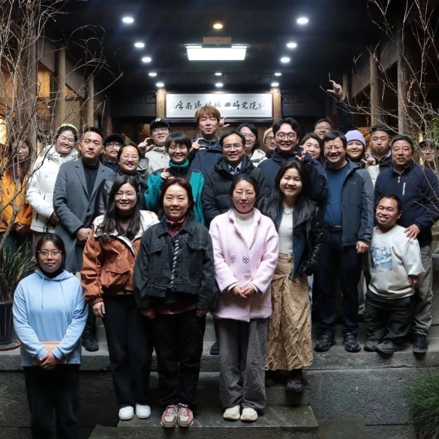

转载 | SeeDAO乡建考察团赴南屏开展专题调研，探索数字技术与乡村振兴融合路径
作者: 屏南乡振院
3月26至29日，屏南乡村振兴研究院牵头，邀请SeeDAO考察团，在屏南开展“数字技术与乡村振兴”专题调研。

在乡村振兴数字化转型的关键时期，为探寻数字技术赋能乡村建设的新路径，3月26至29日，屏南乡村振兴研究院牵头，邀请SeeDAO考察团，在屏南开展“数字技术与乡村振兴”专题调研。
国仁乡建社企联盟理事长严晓辉和SeeDAO发起人白鱼、唐晗组织SeeDAO乡建考察团，对屏南县龙潭文创片区等地进行专题调研，屏南乡村振兴研究院执行院长潘家恩、副院长周芬芳及研究院在地团队共同参与。通过举办“云乡见面会”、第三十二期“云乡共创”屏南乡村振兴沙龙等活动，调研团队围绕数字技术赋能乡村振兴、数字游民参与乡村建设的可能性等核心议题展开深入交流，力求解锁DAO与乡村发展的共生密码。
开启专题调研首日，“云乡见面会”在屏南县四坪村人才驿站举行。参会人员涵盖SeeDAO考察团、屏南乡村振兴研究院团队、四坪村第一书记林殷、村党支部书记潘家如及部分新老村民。严晓辉和白鱼介绍了SeeDAO考察团的基本情况，并对数字技术助力乡村振兴、数字游民参与乡村建设提出了设想与期待。周芬芳分享《文创推动乡村振兴的屏南探索路径》，潘家恩则以《从“净是土”到“是净土”转型时代乡村的价值与可能》为题，介绍四坪村乡建的整体情况。
调研过程中，考察团深入四坪村，走访潇然法式面包、重土空间等文创空间，深入食光梯田、茶盐古道等自然生态空间，体验乡村人文生态。在龙潭村、墘头村等龙潭文创片区，考察团拜访檀舍、47树等空间主理人，与在地乡村建设实践者、新村民深入交流乡村业态发展。考察团还参观了龙潭公益画室，与屏南县传统村落文化创意产业项目总策划林正碌就Web3时代数字公共社群与线下乡村社群联动模式进行探讨。在前汾溪村和厦地村，考察团参观前汾溪谷社会美育综合实践基地、先锋厦地水田书店等，了解在地社群文化氛围，探察文化传承与创新实践情况。
调研期间，第三十二期屏南乡村振兴沙龙——“云乡共创”成功举办。SeeDAO考察团、屏南乡村振兴研究院团队、熙岭乡党委书记杨林、寿山乡党委委员陈晨昱、龙潭文创片区部分新老村民等多方代表参与座谈。潘家恩作《新主体、新业态、新关系——城乡融合时代的新型乡村社区》专题发言，严晓辉介绍乡村建设与DAO节点融合的设计思路，白鱼和唐晗分别就SeeDAO社区共建模式和国内外数字游民群体情况与乡村数字游民社区发展情况作进行分享。杨林书记对考察团的来访表示欢迎，期望借助“云乡共创”推进四坪村“云村民·云村庄”计划进一步发展，促进线上数字公共空间社群与线下乡村社群联动，吸引更多数字游民群体参与乡村振兴。
通过此次调研，SeeDAO考察团对屏南乡村新型社区建设与乡村振兴发展需求有了清晰了解，并就未来引入数字技术和数字游民参与屏南乡村建设达成初步合作意向，推动屏南乡村向数字赋能的新型社区转型。
SeeDAO 致力于打造连接100万数字游民的数字城堡。
End
▼
图源| 郭稷昕、汤文静、杨欣雨
编辑、排版| 汤文静
审核| 梁莉
2020年11月，为贯彻党的十九大提出的关于实施乡村振兴战略的重要部署，统筹协调解决屏南县“三农”问题，强化相关学术研究、人才培养以及国际国内影响，屏南县人民政府与中国人民大学、西南大学、福建农林大学联合成立屏南乡村振兴研究院。研究院由著名“三农”专家、当代乡村建设实践的发起者与学术带头人温铁军担任院长，西南大学乡村振兴战略研究院（中国乡村建设学院）副院长、教授潘家恩担任执行院长,屏南县政协原主席周芬芳担任副院长。研究院下设相关研究中心（所），特聘福建农林大学王松良教授担任生态农业与生态文明转型研究中心主任，中国人民大学董筱丹副教授担任两山研究所所长，北京理工大学杨帅副教授担任数字乡村与空间经济研究中心主任。研究院以“扎根乡村、立足屏南、面向全国、国际视野”为定位，希望通过多方努力，建设成为融试验指导、政策研究、教育培训、孵化创新等功能于一体，具有全国影响力的乡村振兴新型智库，为我国乡村振兴探索有效路径和创新思路。